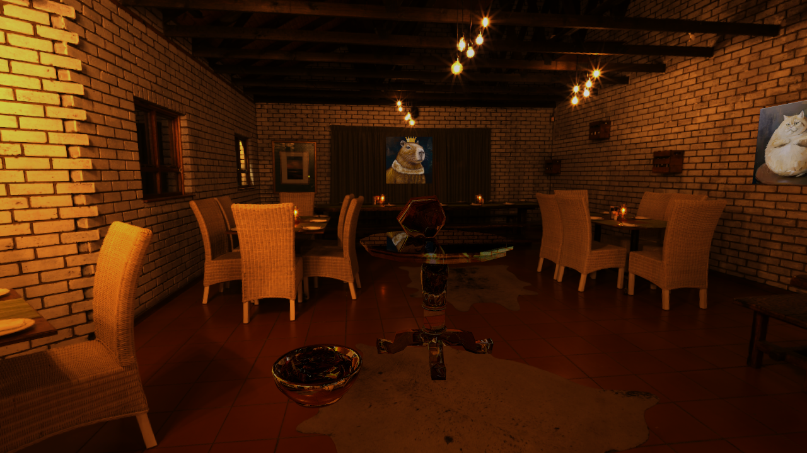

**Assignment 3 Report**
AndrewID: shangyiz
(##) About this template
* You can view your writeup by opening it in a browser - right click this file and open with your browser of choice.
* Replace reference images with your own screenshots or renders when applicable.
* Include descriptions of any encountered problems and the time you spent on each task.
(##) A3T1 CHECKPOINT
You do not need any screenshots for this task.
The time for this one is relatively short, about an hour. But I seemed to fail on 2 test cases listed on Piazza, not sure if they
are corret though. I double checked my formula but could't find out where the problem is.
Your completion will be graded based on the reference `test.a3.task1.cpp` file and
checking that camera rays properly fill up the camera view frustrum.
(##) A3T2 CHECKPOINT
You do not need any screenshots for this task.
The second task was also ok, didn't spend too much time doing it.
Your completion will be graded based on the reference `test.a3.task2.*.cpp` files and
checking that rendering spheres and triangles works properly.
(##) A3T3 CHECKPOINT
You do not need any screenshots for this task.
The third task I spend the most time. It was a solid two days and a half. It was very tough ;-; specifically didn't
know what to do when the function kept recursing when I didn't take care well of the case that primitives are all on one side of the partition.
Right now it has 12 buckets and works alright.
Your completion will be graded based on the reference `test.a3.task3.*.cpp` files and
checking that the generated BVH looks reasonable and rendering large meshes is fast and correct.
(##) A3T4 FINAL
You do not need any screenshots for this task.
Your completion will be graded based on the reference `test.a3.task4.*.cpp` files and
checking that rendering lambertian materials look correct.
(##) A3T5 FINAL
You do not need any screenshots for this task.
Your completion will be graded based on the reference `test.a3.task5.*.cpp` files and
checking that rendering mirror, refract and glass materials look correct.
(##) A3T6 FINAL
You do not need any screenshots for this task.
Your completion will be graded based on the reference `test.a3.task6.*.cpp` files and
checking that there is an improvement between using task 4 direct lighting and using task 6 direct lighting.
(##) A3T7 FINAL
You do not need any screenshots for this task.
Your completion will be graded based on the reference `test.a1.task7.*.cpp` file and
checking that rendering scenes with environment lighting yields correct sampling.
(##) RENDERED IMAGE FINAL
Your image:

Explanation of what it is and how you made it:
Any free model sources you need to credit?
(##) EXTRA CREDIT FINAL
Use this section to explain any extra credit implementations you have made.
(##) Feedback
Use this section to provide feedback about the assignment.